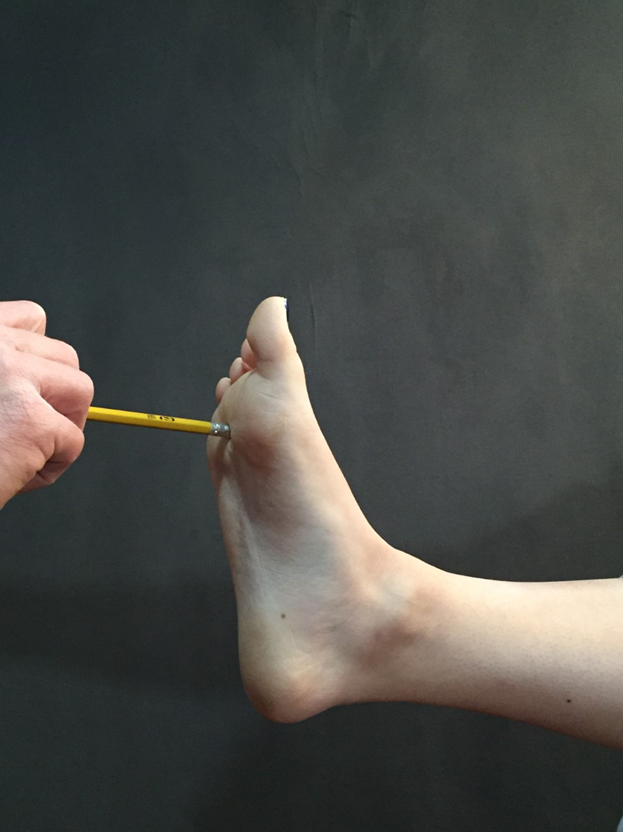

Laying supine with legs extended.
Lateral to the patient's affected foot.
Proximal hand is stabilizing by cupping the dorsum of the foot and the distal hand is holding the pencil with the eraser side towards the patient's affected foot.
Use the pencil to apply pressure near the superior, plantar side of the foot, between 2 of the metatarsals in the intermetatarsal space.
Pain at the site of pressure.
Interdigital Neuroma.
The Pencil Test is specifically for the 3rd and 4th metatarsals, but can also be used for any metatarsal space; implication is a Morton's Neuroma.
None
Konin, Jeff G., et al. Special Tests for Orthopedic Examination. 4th ed. SLACK Incorporated; 2016.